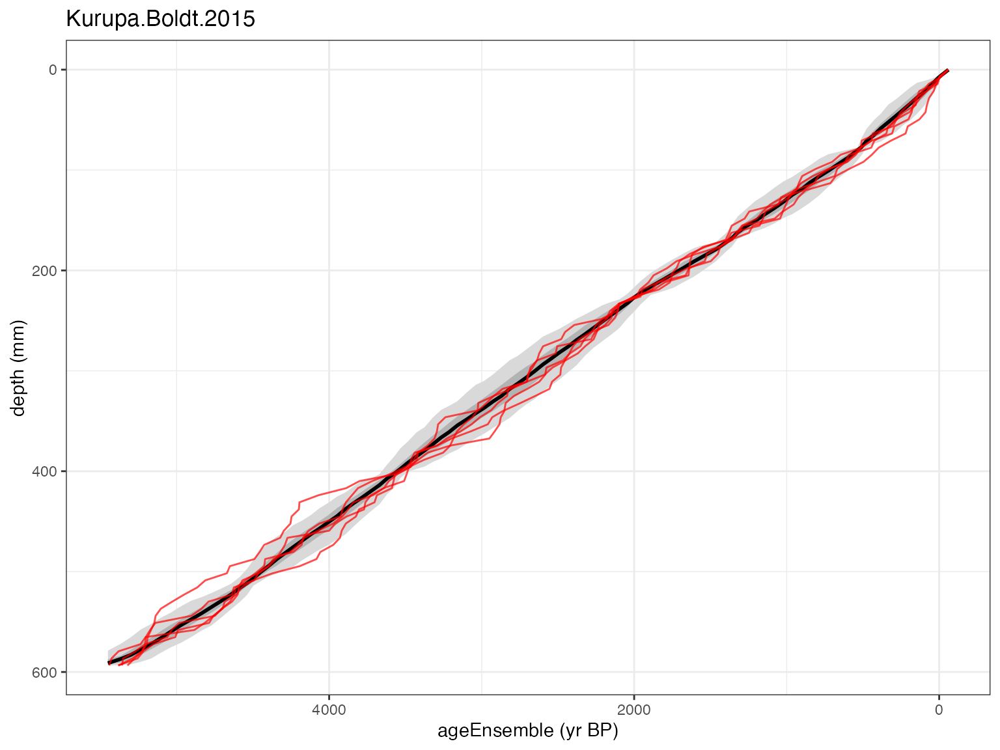
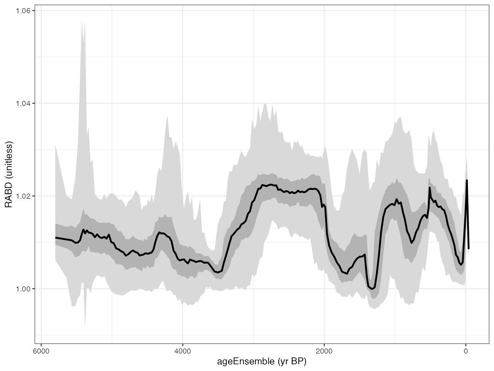

## Welcome to geoChronR version 1.1.16!## ##
## Attaching package: 'geoChronR'## The following objects are masked from 'package:lipdR':
##
## createTSid, pullTsVariablegeoChronR is great at helping you create ensembles, but sometimes you
may want to add ensemble that you’ve created elsewhere into a LiPD file,
and then analyze it using geoChronR. This could be an age ensemble that
you’ve created using a specialized or custom process, or paleo ensemble
calculated with a novel approach. Either way, the
createModel() function is designed to simplify that
process.
In the LiPD framework, chron or paleo ensemble tables are always
stored within models, so createModel() will simplify adding
an ensemble table to a new model object, which is typically the best
approach.
As always, check out the help documentation for details
?createModel of all the parameters and how they work.
Let’s walk through a simple example, using a the Lake Kurupa dataset we explored in the time-uncertain regression vignette. This time, let’s imagine that we’ve already created an ensemble separately, and have it stored as a csv file, and would like to add it to the LiPD object.
First let’s get the data we need. First, we can load in the lipd object:
K <- readLipd("http://lipdverse.org/geoChronR-examples/Kurupa.Boldt.2015.lpd")## [1] "Loading 1 datasets from /var/folders/tp/bfmjfn9s0hd59bm9z80j3mgm0000gn/T//RtmpZZSZtz/Kurupa.Boldt.2015.lpd..."
## [1] "reading: Kurupa.Boldt.2015.lpd"And now let’s open a csv file that has the depth and age ensemble data
ens <- read_csv("http://lipdverse.org/geoChronR-examples/KurupaChronEnsemble.csv")## Rows: 85 Columns: 1001
## ── Column specification ────────────────────────────────────────────────────────
## Delimiter: ","
## dbl (1001): depth (mm), ens1, ens2, ens3, ens4, ens5, ens6, ens7, ens8, ens9...
##
## ℹ Use `spec()` to retrieve the full column specification for this data.
## ℹ Specify the column types or set `show_col_types = FALSE` to quiet this message.Let’s take a quick look at the data.frame we loaded
head(ens)## # A tibble: 6 × 1,001
## `depth (mm)` ens1 ens2 ens3 ens4 ens5 ens6 ens7 ens8 ens9
## <dbl> <dbl> <dbl> <dbl> <dbl> <dbl> <dbl> <dbl> <dbl> <dbl>
## 1 0 -61.1 -6.07e+1 -60.5 -60.8 -58.0 -59.0 -59.8 -63.4 -61.5
## 2 7.07 1.16 4.74e-3 -8.72 -9.85 -5.63 -8.60 0.295 -5.23 -4.05
## 3 14.1 171. 1.70e+2 163. 92.3 99.6 96.7 119. 113. 55.5
## 4 21.2 185. 2.07e+2 211. 245. 254. 251. 201. 164. 124.
## 5 28.3 211. 2.60e+2 243. 276. 272. 267. 223. 195. 194.
## 6 35.3 333. 3.39e+2 295. 356. 366. 377. 333. 315. 313.
## # ℹ 991 more variables: ens10 <dbl>, ens11 <dbl>, ens12 <dbl>, ens13 <dbl>,
## # ens14 <dbl>, ens15 <dbl>, ens16 <dbl>, ens17 <dbl>, ens18 <dbl>,
## # ens19 <dbl>, ens20 <dbl>, ens21 <dbl>, ens22 <dbl>, ens23 <dbl>,
## # ens24 <dbl>, ens25 <dbl>, ens26 <dbl>, ens27 <dbl>, ens28 <dbl>,
## # ens29 <dbl>, ens30 <dbl>, ens31 <dbl>, ens32 <dbl>, ens33 <dbl>,
## # ens34 <dbl>, ens35 <dbl>, ens36 <dbl>, ens37 <dbl>, ens38 <dbl>,
## # ens39 <dbl>, ens40 <dbl>, ens41 <dbl>, ens42 <dbl>, ens43 <dbl>, …So this ensemble table has a depth vector, which is the first column, and 1000 age ensemble members in columns 2 to 1001. Let’s put those in separate variables for clarity:
depth <- ens$`depth (mm)`
ageEns <- ens[,-1] #here we use negative indexing to select all but the first columnNow we can use createModel() to add in our ensemble
table:
Kens <- createModel(L = K,#our starting lipd object
depth.or.age.vector = depth,#our depth vector
ensemble.data = ageEns,#our age ensemble
depth.or.age.units = "mm",#and we'll specify that our depth units are different than the default.
create.summary.table = TRUE
)## [1] "Found it! Moving on..."
## [1] "Found it! Moving on..."
## Created a model in chronData-1, model-1, ensembleTable 1 with variables: depth, ageEnsemble
##
## Also created a summary table in chronData-1, model-1And that’s it! Note that there are several other options in the function, that you may need to specify depending on your data and goals, but it’s often as simple as this.
Let’s take a look.
plotChronEns(Kens)## [1] "Found it! Moving on..."
## [1] "Found it! Moving on..."
## [1] "plotting your chron ensemble. This make take a few seconds..."## Scale for x is already present.
## Adding another scale for x, which will replace the existing scale. You can see that the ensemble data are now included, and the plot looks similar to the one in regression vignette where we created the ensemble with Bacon. The big difference is that there are now age distributions plotted, because of course, adding the ensemble in this way means that we don’t know anything about the radiocarbon data, calibrated or otherwise.
You can now go on to use the ensemble in geoChronR any way you’d like. For example, we can map the age ensemble to the paleodata:
Kens <- mapAgeEnsembleToPaleoData(Kens)## [1] "Kurupa.Boldt.2015"
## [1] "Looking for age ensemble...."
## [1] "Found it! Moving on..."
## [1] "Found it! Moving on..."
## [1] "getting depth from the paleodata table..."
## [1] "Found it! Moving on..."
## mapAgeEnsembleToPaleoData created new variable ageEnsemble in paleo 1 measurement table 1
## mapAgeEnsembleToPaleoData also created new variable ageMedian in paleo 1 measurement table 1And then make a plot:
mae <- selectData(Kens,"ageEnsemble")## [1] "Found it! Moving on..."
rabd <- selectData(Kens,"RABD")## [1] "Found it! Moving on..."
plotTimeseriesEnsRibbons(X = mae,Y = rabd)
That’s it! You could now save this LiPD file for future analysis with
lipdR::writeLipd(), or continue on with this workflow in
geoChronR.